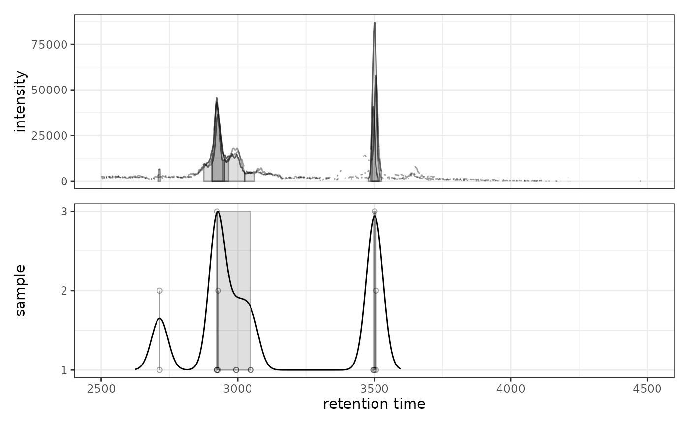
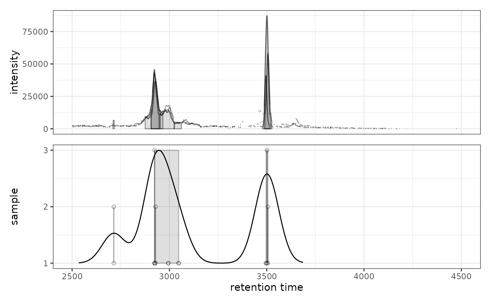

ggplot2 Version of plotChromPeakDensity
Source:R/AllGenerics.R, R/gplotChromPeakDensity-methods.R
gplotChromPeakDensity.RdVisualizes the density of chromatographic peaks along the retention time axis
to help evaluate peak density correspondence analysis settings. This is a ggplot2
implementation of XCMS's plotChromPeakDensity() function.
Usage
gplotChromPeakDensity(
object,
param,
col = "#00000060",
peakType = c("polygon", "point", "rectangle", "none"),
peakCol = "#00000060",
peakBg = "#00000020",
peakPch = 1,
simulate = TRUE,
...
)
# S4 method for class 'XChromatograms'
gplotChromPeakDensity(
object,
param,
col = "#00000060",
peakType = c("polygon", "point", "rectangle", "none"),
peakCol = "#00000060",
peakBg = "#00000020",
peakPch = 1,
simulate = TRUE,
...
)
# S4 method for class 'MChromatograms'
gplotChromPeakDensity(
object,
param,
col = "#00000060",
peakType = c("polygon", "point", "rectangle", "none"),
peakCol = "#00000060",
peakBg = "#00000020",
peakPch = 1,
simulate = TRUE,
...
)Arguments
- object
An
XChromatogramsorMChromatogramsobject with detected chromatographic peaks.- param
A
PeakDensityParamobject defining the peak density correspondence parameters. If missing, the function will try to extract it from the object's process history (if correspondence has been performed).- col
Color for the chromatogram lines in the upper panel (default: "#00000060").
- peakType
Type of peak annotation in upper panel: "polygon", "point", "rectangle", or "none" (default: "polygon").
- peakCol
Color for peak markers (default: "#00000060").
- peakBg
Background color for peak markers (default: "#00000020").
- peakPch
Point character for peak markers when peakType = "point" (default: 1).
- simulate
Logical, whether to simulate correspondence analysis (TRUE) or display existing results (FALSE). Default: TRUE.
- ...
Additional arguments passed to plot methods.
Value
A ggplot object with two panels:
Upper panel: Chromatogram(s) with identified peaks
Lower panel: Peak density along retention time axis showing individual peaks as points (y-axis = sample) with density estimate overlaid as a line. Grey rectangles indicate peaks grouped into features.
Details
The function creates a two-panel visualization:
Upper panel shows the chromatographic data with detected peaks
Lower panel shows each peak at its retention time (x-axis) and sample (y-axis)
A kernel density estimate is shown as a line
Grey rectangles indicate peaks that would be (simulate=TRUE) or have been (simulate=FALSE) grouped into features based on the peak density method
This visualization is particularly useful for optimizing PeakDensityParam
settings, especially the bw (bandwidth) parameter which controls the smoothing
of the density estimate.
Note: Currently only supports plotting a single row (m/z slice) across multiple
samples. If object has multiple rows, please subset to one row first.
See also
plotChromPeakDensity for the original XCMS implementation
Examples
# \donttest{
library(xcmsVis)
library(xcms)
library(faahKO)
library(MsExperiment)
library(BiocParallel)
# Load example data
cdf_files <- dir(system.file("cdf", package = "faahKO"),
recursive = TRUE, full.names = TRUE)[1:3]
# Create XcmsExperiment and perform peak detection
xdata <- readMsExperiment(spectraFiles = cdf_files, BPPARAM = SerialParam())
cwp <- CentWaveParam(peakwidth = c(20, 80), ppm = 25)
xdata <- findChromPeaks(xdata, param = cwp, BPPARAM = SerialParam())
# Extract chromatogram for a specific m/z range
chr <- chromatogram(xdata, mz = c(305.05, 305.15))
#> Extracting chromatographic data
#> Processing chromatographic peaks
# Visualize peak density with default settings
prm <- PeakDensityParam(sampleGroups = rep(1, 3), bw = 30)
gplotChromPeakDensity(chr, param = prm)
#> Warning: Removed 240 rows containing missing values or values outside the scale range
#> (`geom_line()`).

# Try different bandwidth to see effect on peak grouping
prm2 <- PeakDensityParam(sampleGroups = rep(1, 3), bw = 60)
gplotChromPeakDensity(chr, param = prm2)
#> Warning: Removed 240 rows containing missing values or values outside the scale range
#> (`geom_line()`).

# }